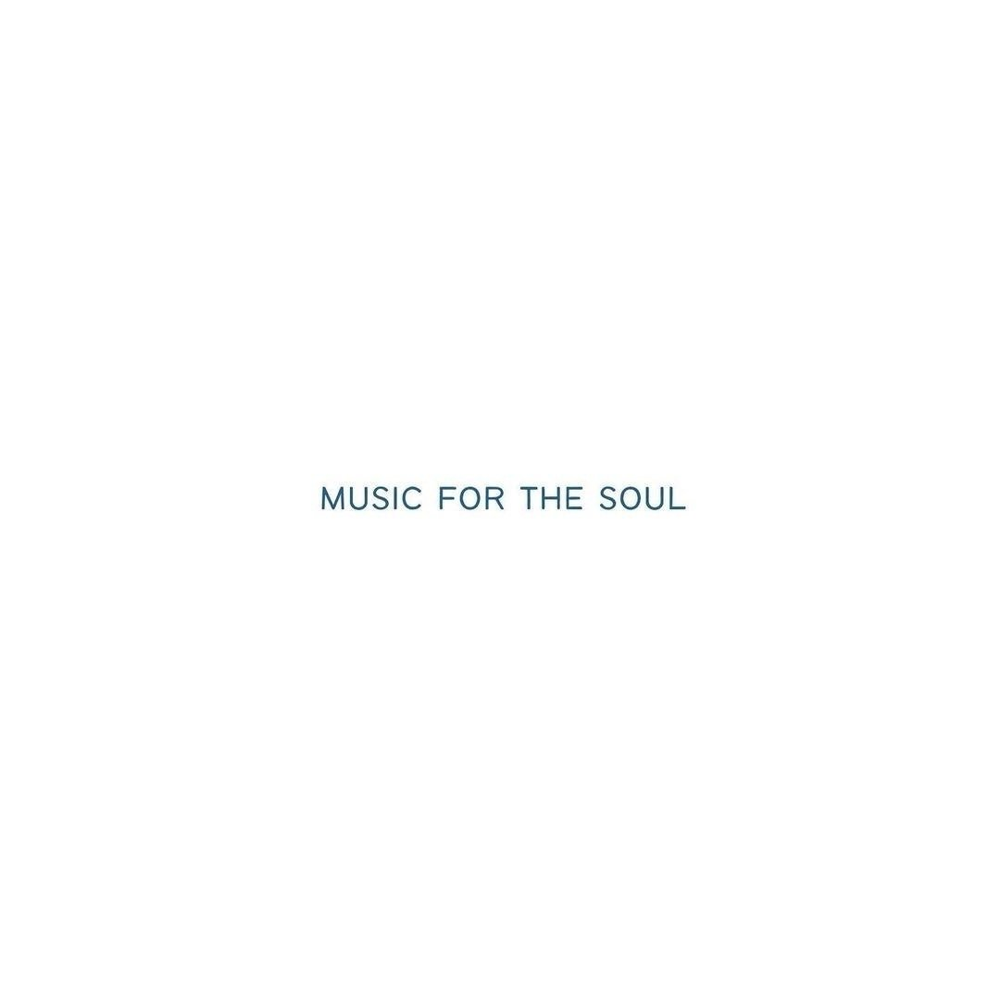

Hi, my name is Kaiyang Weng. I am a third-year student at Northeastern University and my major is Data Science and Business Administration.
I have always loved music. I listen to it while studying, while coding, and whenever I need to clear my head. My taste covers a lot of different styles — I am really into Jazz, jazz hip-hop, hip-hop, ambient music, and alternative rock. Some of my favorite artists come from Japan, like Nujabes, Re:plus, Kenichiro Nishihara, Shing02, 藤原ヒロシ (Hiroshi Fujiwara), and 屋敷豪太 (Gota Yashiki). I also love 2Pac, The Cure.
I grew up listening to a lot of music from Japan and the West at the same time. I was drawn to the way Japanese producers mixed jazz samples with hip-hop beats — it felt completely different from anything else I had heard. Artists like Nujabes and Kenichiro Nishihara became a big part of my life because their music is calm, focused, and very detailed. It is perfect for late-night study sessions.
At the same time, I also love heavier and more emotional music. 2Pac's lyrics made me think about storytelling in a new way. The Cure introduced me to post-punk and gothic rock, which I was not expecting to love but absolutely do. And Hiroshi Fujiwara, who is a legendary figure in Japanese street culture and music, showed me how music, fashion, and art can all connect together.
This website is a place where I share the artists and songs that mean the most to me. Click the link above to visit the music page and explore my recommendations!
Email: weng.ka@northeastern.edu
GitHub: https://github.com/KaiyangWeng
LinkedIn: https://www.linkedin.com/in/kaiyangweng/